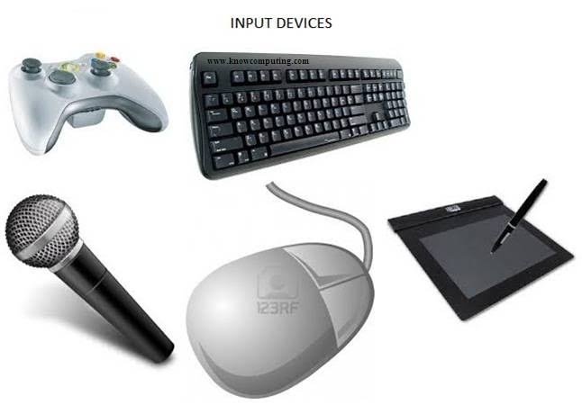

Learn about input devices and how they are used in everyday life, education, and the workplace.
An input device is a hardware device used to send data, instructions, or control signals to a computer. There are many different types of input devices, each designed for specific purposes. Common examples include keyboards, mice, microphones, scanners, webcams, and touchscreens. These devices make it easier for users to enter information and perform various tasks efficiently. Input devices are widely used in education, workplaces, entertainment, and everyday computing.

*Examples of Input Devices*